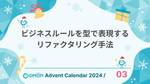
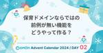

コドモン Product Team Blog
https://tech.codmon.com/
株式会社コドモンの開発チームで運営しているブログです。エンジニアやPdMメンバーが、プロダクトや技術やチームについて発信します！
フィード

PHPで魔法（DIコンテナ）を作って理解した話
コドモン Product Team Blog
こちらは「コドモン Advent Calendar 2024」の 8日目の記事です qiita.com こんにちは！ プロダクト開発部の岡村 亮太です！ コドモンに入ってからPHPについて考える機会が増え、日に日にPHPへの愛着が深まっています。 そこで、PHPについて何か書いてみたいと思っています！ 今回は、開発でよく使われる便利な仕組み「DIコンテナ」について、PHPで 「作ってみた」話を書きます！ まずは下記のコードを見てください。 <?php class TestRepository { public function __construct() {} } class TestServ…
17時間前

プログラムと音楽って似てる気がする、を言語化してみた
コドモン Product Team Blog
こちらの記事は「コドモンAdvent Calendar 2024」の 7日目の記事です🎅 こんにちは！コドモンの諸星です。 プログラムと音楽 突然ですが、プログラム*1と音楽が似ていると感じたことはありませんか？ 私は似ていると感じているのですが、人に説明できるくらい言語化できたことがありませんでした。 今回は「プログラムと音楽の共通性」についての言語化にチャレンジします！ 共通点1：あらかじめ動作を記述する まず最初の共通点は、「動作が事前に記述されている」ということです。 ソフトウェアのコードはいわずもがな、音楽においても楽譜という形で、事前に音の高さ・リズム・楽器の種類などが事前に記述さ…
2日前

Cloud SigningでiOSアプリ開発の面倒な作業から解放された話🎉
コドモン Product Team Blog
はじめに こちらは「コドモン Adevent Calendar 2024」の6日目の記事です。 qiita.com こんにちは、エンジニアの重田です。2024年はモバイルアプリの基盤をCapacitorに移行しました。ビルド周りにも手を入れてiOSアプリのCloud Signingを導入したところ、地味に面倒な作業から解放されました！ 🎉年に1回の証明書やProvisioning Profileの更新作業がゼロに🎉 🎉検証用のデバイスを追加するたびにProvisioning Profileを更新する作業がゼロに🎉 🎉CIマシンにProvisioning Profileなど必要なファイルを設置す…
3日前

React hook formで動的なフォームをサクッと実現
コドモン Product Team Blog
背景 開発部のチャブです。 最近所属しているチームでとあるウェブページのリニューアルをすることになりました。 現在のページが動いているスタックでは一定の技術的負債が溜まっていることもあり、せっかくの機会なのでReactで新規に開発する方針になりました。 今回のリニューアルの意図は入力項目を減らすことで設定を容易にすることです。対象となる元のページはフォームで15個ほどの入力項目があります。 すでにある設定項目はなくさず、必要な時にだけ入力できるように、項目を動的に増やすことができる必要があります。 そのようなフォームを実現するには、入力項目の追加と削除、そして表示されている項目一覧管理の実装が…
4日前

ビジネスルールを型で表現するリファクタリング手法 1
1
コドモン Product Team Blog
こちらは「コドモン Advent Calendar 2024」の 3日目の記事です qiita.com エンジニアの上代です。 今回ご紹介するのは、請求に関連するシステムで実施したリファクタリングについてです。このプロジェクトでは、サーバーサイドをKotlinで開発しており、請求の生成、支払い処理、キャンセル対応といったビジネスロジックを扱っています。具体的には、ドメインロジックやAPI設計をKotlinで実装し、型安全性や開発効率を活かしながらビジネス要件を実現しています。 プロジェクトが進むにつれて、さまざまな状態や処理が一つのクラスに集約され、ビジネスロジックが複雑化していました。これに…
6日前

保育ドメインならではの前例が無い機能をどうやって作る？
コドモン Product Team Blog
こちらはコドモン Advent Calendar 2024の2日目の記事です🎅🎄 qiita.com こんにちは！ コドモンプロダクト開発部のPdM天川です⛄️ 今回は「所在確認アラート」機能の開発において、保育の文脈が強い、かつ前例のない機能の仕様をどのように決めたかを紹介します！ こんな人に向けて書きました Vertical SaaSで働くPdM ドメイン特化ゆえ前例がない機能を作っている ユーザーによって微妙に違う業務をどのように仕様へ落とし込もうか迷っている 所在確認アラートってなに？ 子どもの登園予定時刻までに打刻がなかった場合に、施設と保護者の両方へアラートを出す機能です。 登園予…
7日前

O'Reillyのon demand coursesでリスキリングしてみた
コドモン Product Team Blog
O'Reillyのサブスクでオンライン講座を受講し、どんなものかをレポートしました
8日前
コドモンにエンジニアリングマネージャーとして入社しました
コドモン Product Team Blog
はじめまして。コドモンでメモリーチームのエンジニアリングマネージャーをしている@takaoh717です。 2024年8月に株式会社コドモンにエンジニアリングマネージャーとして入社し、3ヶ月ほどが経ちました。この記事では、コドモンを選んだ理由や入社後に具体的にどんなことをやっているのかをご紹介します。この内容を読んで、少しでもコドモンに興味をもっていただけると嬉しいです。 自己紹介 前職のdely株式会社にはiOSエンジニアとして入社し、約6年半の在籍期間の中でiOSエンジニアからPdMやEMなど様々なロールを経験しました。その後、2024年8月にコドモンに入社しました。プライベートでは4歳の息…
12日前
イベント連携基盤の技術選定をした話 〜比較・結論編〜
コドモン Product Team Blog
こんにちは、プロダクト開発部の中田です。 今回は、イベント連携基盤の技術選定におけるサービス比較結果のまとめと結論をお伝えします。 イベント連携基盤の技術選定をした話 〜背景・課題編〜 イベント連携基盤の技術選定をした話 〜EventBridgeさわってみた編〜 イベント連携基盤の技術選定をした話 〜Axon + MSKさわってみた編〜 イベント連携基盤の技術選定をした話 〜比較・結論編〜 ←今回はこの話 技術選定の検討自体にも長くかかりましたが、ブログ記事の執筆も大変でした。最後までお付き合いいただけると幸いです。 本記事の概要 これまでの記事では、イベント連携基盤の検討にいたった背景をはじ…
17日前
イベント連携基盤の技術選定をした話 〜Axon + MSKさわってみた編〜
コドモン Product Team Blog
こんにちは、プロダクト開発部の中田です。 今回は、イベント連携基盤の技術選定において、前回のEventBridge編に引き続き、MessageBrokerの候補として挙げたAmazon Managed Streaming for Apache Kafka（以降、MSKと記述）およびAxon Framework（以降、Axonと記述）について、実際にさわってみて気づいた点をご紹介します。 イベント連携基盤の技術選定をした話 〜背景・課題編〜 イベント連携基盤の技術選定をした話 〜EventBridgeさわってみた編〜 イベント連携基盤の技術選定をした話 〜Axon + MSKさわってみた編〜 ←…
19日前
イベント連携基盤の技術選定をした話 〜EventBridgeさわってみた編〜
コドモン Product Team Blog
こんにちは、プロダクト開発部の中田です。 今回は、イベント連携基盤の技術選定の記事の続きです。 MessageBrokerの候補として挙げたAmazon EventBridge（以降、EventBridgeと記述）について、実際にさわってみて気づいた点をご紹介します。 イベント連携基盤の技術選定をした話 〜背景・課題編〜 イベント連携基盤の技術選定をした話 〜EventBridgeさわってみた編〜 ←今回はこの話 イベント連携基盤の技術選定をした話 〜Axon + MSKさわってみた編〜 イベント連携基盤の技術選定をした話 〜比較・結論編〜 本記事の概要 まず、イベント連携基盤のMessage…
20日前
イベント連携基盤の技術選定をした話 〜背景・課題編〜
コドモン Product Team Blog
こんにちは、プロダクト開発部の中田です。 今回は、イベント連携基盤の技術選定を行なった話をご紹介します。 思った以上にボリュームが多くなってしまったので、以下のように複数回に分けて投稿します。 それぞれ投稿でき次第、記事のリンクを追加予定です。 イベント連携基盤の技術選定をした話 〜背景・課題編〜 ←今回はこの話 イベント連携基盤の技術選定をした話 〜EventBridgeさわってみた編〜 イベント連携基盤の技術選定をした話 〜Axon + MSKさわってみた編〜 イベント連携基盤の技術選定をした話 〜比較・結論編〜 最初は、「背景・課題編」ということで、イベント連携基盤を導入しようと考えた背…
21日前
"コドモンでのアジャイル開発"というイベントを開催しました！＆イベントでいただいた質問への回答をまとめました
コドモン Product Team Blog
こんにちは、エンジニアの市川です。 11月7日のお昼に、「CoDMON TechTalk」と題したイベントを開催しました！今回のイベントでは、「アジャイル」をテーマに4人がLTを発表しました。 codmon.connpass.com t.co t.co t.co t.co イベント中にslidoで質問を集めつつ、LT発表後に登壇メンバーが質問にお答えしたのですが、時間の都合上その場で返答できなかったものも多く、改めて質問へのアンサーを記事にします。 たくさん質問をいただき、ありがたかったです！ ペアプロ関連 質問1：ペアプロはどのようにしているか リモートでのペアプロツール ペアの決め方 ドラ…
1ヶ月前
Vue Fes Japan 2024に協賛しました！
コドモン Product Team Blog
こんにちは！普及推進部エンジニアのまっせーです！ 「Vue Fes Japan 2024」にゴールドスポンサーとして協賛したので、当日の様子をレポートします！ 協賛の背景 当日の様子 他社のスポンサーブースの様子 アフターパーティ Vue Fes Japan 2024 After Nightを開催します！ 協賛の背景 Vue Fes JapanとはJavaScript フレームワークで人気の高いVue.jsのカンファレンスです。 コドモン開発部・普及推進部では、プロダクトやサイトの一部でVue.jsを採用しており、Vue.jsコミュニティを盛り上げるお力添えをしたく協賛いたしました！ 当日の様…
1ヶ月前
野口光太郎さんをお招きしてアジャイル勉強会を開催しました！
コドモン Product Team Blog
こんにちは！プロダクト開発部エンジニアリングマネージャーの木村です。 私たちプロダクト開発部では、「Codmon Tech Meet」という勉強会を定期的に開催しています。ここでは、社外の様々な領域のプロフェッショナルな方々をお招きして、より良いプロダクト開発部を目指すための学びの場として活用しています。 今回は、コドモンでアジャイルについてのアドバイザリーをしていただいており、アジャイルリーダーシップの翻訳メンバーでもある野口光太郎さんをお招きしてアジャイル勉強会を開催しました🎉 www.kyoritsu-pub.co.jp 開催経緯 コドモンプロダクト開発部ではエクストリームプログラミング…
2ヶ月前
「フルリモートだけど入社して半年足らずでかなり馴染んだ話」というタイトルでRemote Engineering Meetupに登壇しました！
コドモン Product Team Blog
こんにちは、プロダクト開発部のさかうえです！ Uターンで新潟に帰還した後、2024年3月にコドモンにジョインして以来、フルリモート勤務をしております。 コドモンにジョインして半年を迎えようとしていた7月末日、7社合同のLT会「Remote Engineering Meetup ～リモートでのチーム活動の工夫～」に登壇させていただきました。 夏休みを挟んでだいぶ日が経ってしまいましたが、レポートを書いていきます！ 目次 目次 登壇のきっかけ コドモン入社前のRemote Engineering 伝えたかったこと ペア作業はいいぞ リモート勤務って大丈夫？ GatherとかoViceにちゃんといる…
3ヶ月前
コドモンのQAが目指したい方向を決めました！
コドモン Product Team Blog
コドモンのQAが目指したい方向を決めました！ こんにちは。 コドモンのQAエンジニアの砂川です。 今回は、今後コドモンのQAエンジニアが目指したい姿を定めました！ QAチームの立ち上げやQAのミッション策定を考えている方には、是非読んでいただきたいです！ QAの目指したい方向について 早速ですが、目指したい方向として、下の図のような世界を目指したいと考えています。 QAがあらゆる関係者と接点を持つ世界 これを端的に文章で書き記すと、 サービスを中心に、あらゆる関係者の「期待」や感じている「価値」に対して、 「テスト」を中心に活動して最大化を目指す ということになります。 今までも、品質やテスト…
3ヶ月前
プロダクトの改善を加速するためにCREチームを立ち上げました！
コドモン Product Team Blog
こんにちは！CREチームのまさてぃです。 コドモン開発チームにCREチームが誕生しましたので、今日はそのチームについて紹介をしていきたいと思います！ CREとは CREチーム発足の経緯 CREチームの直近の動き方 CREチームでやっていくこと CREとは CREとはCustomer Reliability Engineering（顧客信頼性エンジニアリング）のことで2016年にGoogleが提唱したポジションになります。 顧客の信頼性といっても広く捉えられるため具体的な仕事の内容については様々です。 CREチーム発足の経緯 コドモンではサービスの利用者からの問い合わせをカスタマーサポート部門が…
3ヶ月前
【社員紹介】ユーザー体験の向上へ情熱を持ち、フロントエンドを強みとして活躍するエンジニアを紹介します！
コドモン Product Team Blog
こんにちは！Engineering Officeのおかぱるです。 今回はユーザー体験の向上へ情熱を持ちながら、フロントエンドやUI/UXの課題に向き合っている重田さんを紹介していきます！ コドモンにジョインするまで これまでの経歴 コドモンにジョインした理由 コドモンでの仕事内容 モバイル基盤の載せ替え 子育て情報配信プロジェクト イネイブリングと横断UX さいごに 重田さん コドモンにジョインするまで これまでの経歴 ――簡単に自己紹介お願いします！ 重田です。熊本出身です。5歳と3歳の子どもがいて、子どもと一緒にカルタで遊ぶことにはまっています。 躍動感あふれるカルタの現場 ――これまでの…
3ヶ月前
一日改善に没頭できるkaizen dayを実施してみました
コドモン Product Team Blog
こんにちは開発部のチャブです。今回は、一日中、システムの改善に没頭できる「kaizen day」について紹介をしていきます！ kaizen dayが誕生した背景 当日の流れ どんな改善が行われたか フィーチャーフラグ制御ツール API ドキュメントのGitHub Pagesへのパブリッシュ さいごに kaizen dayが誕生した背景 ソフトウェア開発は楽しいものですが、日がたつにつれさまざまな「負債」がうまれてきますよね。依存するライブラリが劣化したり、自動テストの実行が遅くなったり。他にもこういうものがあったらいいなと思うけど、なかなか必要な時間を費やすタイミングが見つからないことがありま…
3ヶ月前
運用作業の自動化で見えた、AWS Step FunctionsをVisual Editorで組む際のコツ
コドモン Product Team Blog
こんにちは。コドモンStep Functions部の関口です。最近Step Functionsばかりやっていたので自分が開発部の所属であることももはや忘れています......。 みなさまはStep Functionsを活用されていますか？ 私は覚えることが多そうだという理由で今まで敬遠していたのですが、ここ最近、業務処理バッチや運用作業の自動化に携わる中で利用する機会が増えました。比較的規模の大きなStateMachineを作る中で自分なりのTipsが増えてきたので、ここで書いてみようと考えました。 今回ご紹介するのは、AWSのコンソールからStep Functionsへ飛んでVisual E…
4ヶ月前
AWS Summit Japan 2024 現地レポート
コドモン Product Team Blog
こんにちは！プロダクト開発部の江口です。 先日、AWS Summit Japan 2024に参加してきましたので、そのレポートをお届けします。イベントでは最新のAWS技術やサービスに触れることができ、多くの学びがありました。また、現地ならではの体験を通じて、感じたことや学んだこと、AWS Summit参加後の心境の変化をお伝えします。 aws.amazon.com AWS Summit Japanとは？ AWS Summitに実際に参加してみて思った楽しみ方 疑問に思ったらその場で質問する 実際のやりとり ブース以外の楽しみ AWS Summit参加後の心境の変化 学習スタイルの変革 現地参加…
4ヶ月前
NewRelicGameDayを社内で開催しました！
コドモン Product Team Blog
はじめに こんにちは、プロダクト開発 SREグループの田中です！ コドモンでは、オブザーバビリティツールとしてNewRelicを活用し、エンジニア全員がシステム改善に取り組めるように全メンバーに対してFull platform userを付与しています！ 今回、NewRelicのさらなる活用を目指し、NewRelicさんの協力のもと社内でGameDayを開催しました。本記事では、そのGameDayの詳細について紹介いたします！ 開催経緯 SREではNewRelicを導入後に各チームと「ダッシュボードを見る会」を週次で開催することで、開発者がNewRelicを理解し活用できるような取り組みを行っ…
4ヶ月前
Kotlin Fest 2024に協賛しました🐣
コドモン Product Team Blog
こんにちは！Engineering Officeのおかぱる（@okapall）です。 「Kotlin Fest 2024」にひよこスポンサーとして協賛してきましたので、協賛背景や当日の様子を書いていきます！ www.kotlinfest.dev 協賛の背景 サーバーサイドKotlin選定の理由 当日の様子 イベントを終えて 協賛の背景 コドモン開発チームではメインプロダクトにて一部サーバーサイドKotlinを採用しており、Kotlinコミュニティを盛り上げる一助になったらいいな、という思いで協賛しました！ コドモンの技術スタック サーバーサイドKotlin選定の理由 コドモンのメインプロダクト…
5ヶ月前
オライリー学習プラットフォームを導入しました！
コドモン Product Team Blog
こんにちは！Engineering Officeのおかぱるです。 6月よりエンジニア向けに「オライリー学習プラットフォーム」を導入したので、サービス内容や導入背景について記事にしていきます！ エンジニアメンバーからは歓喜の声が上がっています👏 エンジニアの学びの支援をやっていきたい方の参考になると嬉しいです！ オライリー学習プラットフォームとは オライリーの書籍が読み放題 クラウドサービスのサンドボックス 資格取得のためのコンテンツ 導入背景 トライアルの様子 チームでの勉強会につながる 共通認識を作りやすい キャッチアップへのモチベーションが上がった コンテンツの質が良い 今後 オライリー学…
6ヶ月前
「DDDでレガシーコードに立ち向かうリアル」というタイトルでObject-Oriented Conference 2024に登壇しました！
コドモン Product Team Blog
こんにちは！ プロダクト開発部の中田です。 先日、Object-Oriented Conference 2024(以下OOC)にスポンサー枠で登壇させていただきました。 「せっかくだから登壇レポートも書いてくれますよね」という、おかぱるさんからの圧を感じながら(笑)、この記事の執筆をはじめています。 登壇タイトルが「DDDでレガシーコードに立ち向かうリアル」だったので、「OOCの登壇に立ち向かうリアル」も書いていければと思います。 登壇時の様子 写真の引用元： https://www.flickr.com/photos/oocdev/53636995878/in/album-721777203…
8ヶ月前
Object-Oriented Conference 2024に協賛しました！~初オフラインイベントスポンサーの裏側~
コドモン Product Team Blog
こんにちは！ Engineering Officeチームのおかぱるです。 今回はコドモン開発チームが初めてオフラインイベントのスポンサーをすることになったObject-Oriented Conference 2024（以下OOC）についてです！ スポンサーをすることになった背景、準備やイベント当日の様子、ふりかえりまでを記事にしていきます。イベントに向けたチームの雰囲気を知りたい方、またオフラインイベントの裏側が気になっている方がいましたら、ぜひご覧ください💪 スポンサーをすることになった背景 スポンサーとして準備することと運営メンバー 準備〜当日の様子 ブース ノベルティ 幕間CM セッショ…
8ヶ月前
成瀬さんに「イベントストーミングによるモデリングワークショップ」を開催していただきました！
コドモン Product Team Blog
こんにちは！ コドモンプロダクト開発部の靍田です。 コドモンでは「Codmon Tech Meet」と称して、3か月に一度、外部の講師を招いて開発に関する学びを深める機会を設けています！ 今回は、2024年2月9日(金)に成瀬允宣さんをお招きして、社内のPdM、エンジニアを対象にイベントストーミングを用いたドメインモデリングのワークショップを開催しました。今回は当日の様子についてレポートしていきます！ イベントストーミングとは ワークショップの目的と内容 目的 講義の内容 当日の流れ 参加者内訳 ワークショップのハイライト 成瀬さんによるイベントストーミング実演 チームにわかれて実際にイベント…
9ヶ月前
【入社エントリー】職種を越えてチャレンジしたい！という思いを持ってジョインしたQAエンジニアを紹介します
コドモン Product Team Blog
こんにちは！ Engineering Officeの岡本です。 今回は数か月前に入社されたQAエンジニアの砂川さんにインタビューしていきます！ 砂川さんは第三者検証でのQAエンジニアの経験を経て、コドモンにジョインを決めてくれました。 コドモンへの入社理由や、QAエンジニアとしての仕事、今後力を入れていきたいことなどを語ってもらいましたので、ぜひご覧ください🚀 オフィスでエンジニアと一緒にペア作業する砂川さん ――簡単に自己紹介お願いします！ QAエンジニアの砂川です。社会人はちょうど10年目です！ 新卒では大学受験予備校のチューターをやっていて、IT業界ではなかったです。紆余曲折を経て、前職…
9ヶ月前
EKSを活用したテスト環境構築自動化の仕組みを導入し開発者体験を向上させた取り組み
コドモン Product Team Blog
こんにちは、コドモンのプロダクト開発部でSREをしている渡辺です。 先日私たちのチームでは、EKSを活用したテスト環境を自動で構築する仕組みをCIに導入しました！ 本記事では、自動化の仕組みや工夫した点について紹介していきます。 テスト環境構築を自動構築する以前の課題 テスト環境構築自動化の仕組み 各テスト環境ごとKubernetesリソースを管理する仕組み テスト環境が外部からのトラフィックを受け取る仕組み テスト環境構築からテスト環境削除までの流れ まとめ テスト環境構築を自動構築する以前の課題 これまで、コドモンのテスト基盤はGitHub Actions（以下 GHA）のself-hos…
10ヶ月前